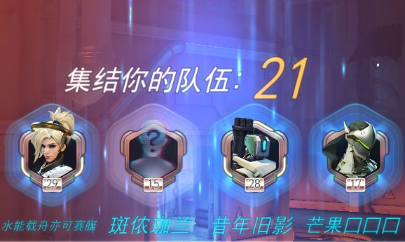

惩罚机制
如果你在中途强退太多场，导致你完成(玩过 vs 完成)的游戏的百分比降到我们设定的阈值之下，你会收到警示信息(该百分比的计算，以你最近玩过的20场游戏为参考)
如果你在收到警示信息(通常警示信息显示在屏幕左下角)后，继续提前离开游戏，在随后的游戏中，你会受到惩罚：赛后结算的经验值降低75%
如果你掉线或因AFK被踢出游戏：将同样被视为有意逃跑，计入强退场次。
“集结你的队伍”阶段
有60s/30s的倒计时,如果你在“集结队伍”阶段结束之前离开游戏(即在你能进入出生点之前离开游戏)：不会记入玩过的场次，不会记为强退逃跑